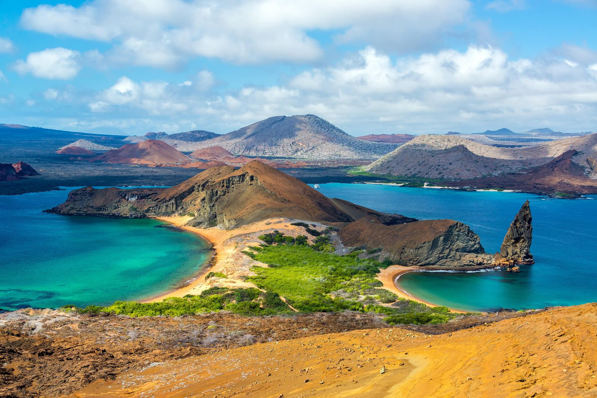
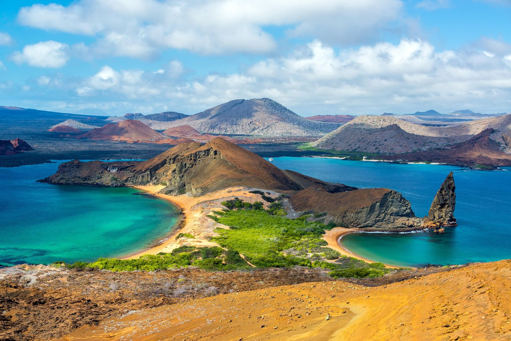

Galápagos
Las islas Galápagos son conocidas por su biodiversidad y por ser parte de la teoría de Darwin.
Cataratas del Iguazú
Las Cataratas del Iguazú son una maravilla natural en la frontera de Argentina y Brasil.

Las islas Galápagos son conocidas por su biodiversidad y por ser parte de la teoría de Darwin.
Las Cataratas del Iguazú son una maravilla natural en la frontera de Argentina y Brasil.